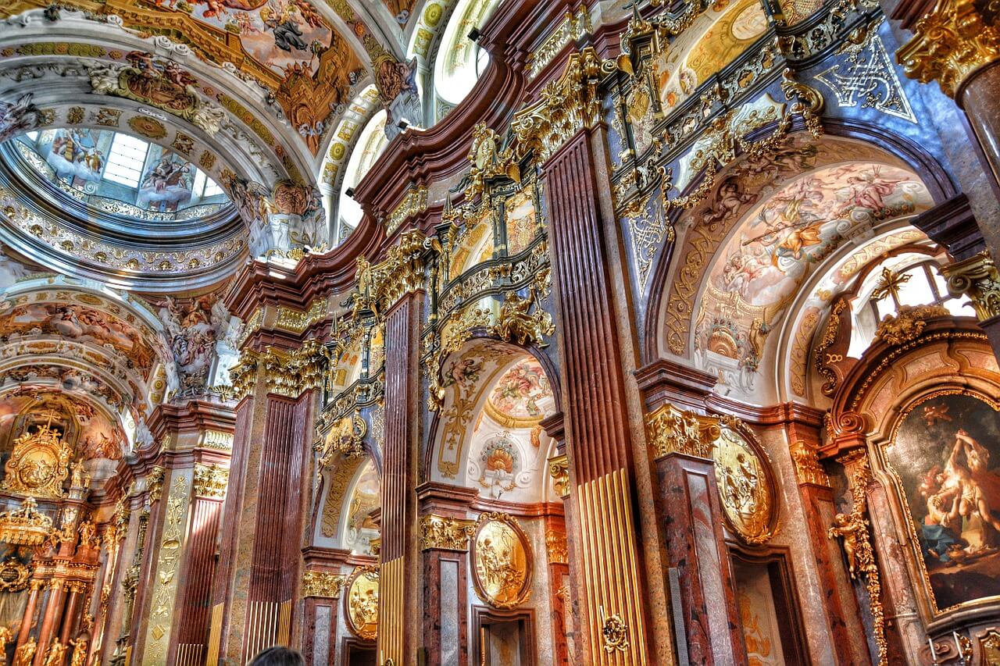

Il
Barocco è un movimento culturale che si è sviluppato in tutta Europa nel XVII secolo. Si è opposto al
gusto classico e moderato che aveva dominato il secolo precedente per apportare grandi cambiamenti: l'arte
deve suscitare
stupore e
meraviglia, anche e, soprattutto, attraverso il gusto per l'insolito e il bizzarro.
Questo nuovo stile, che ha coinvolto arte e letteratura, si è affermato perché, in quel periodo, iniziò a
cambiare la percezione e la sensibilità della popolazione. Ad inizio del 1600, infatti, ci furono numerose scoperte.

Il termine Barocco è stato utilizzato a partire dalla fine del Settecento per indicare, in maniera
dispregiativa,
tutte le tendenze artistiche del secolo precedente che si discostavano dall'armonia classica. Il termine
deriverebbe dal sostantivo
baroco, utilizzato in filosofia per indicare un ragionamento cavilloso. Oppure
dall'aggettivo portoghese
barroco, perla di forma irregolare. Indicherebbe pertanto l'aspetto irregolare
dell'arte barocca. Soltanto la critica del Novecento è riuscita a rivalutare in chiave positiva il movimento,
per porre l'accento proprio sullo sperimentalismo e l'innovazione.